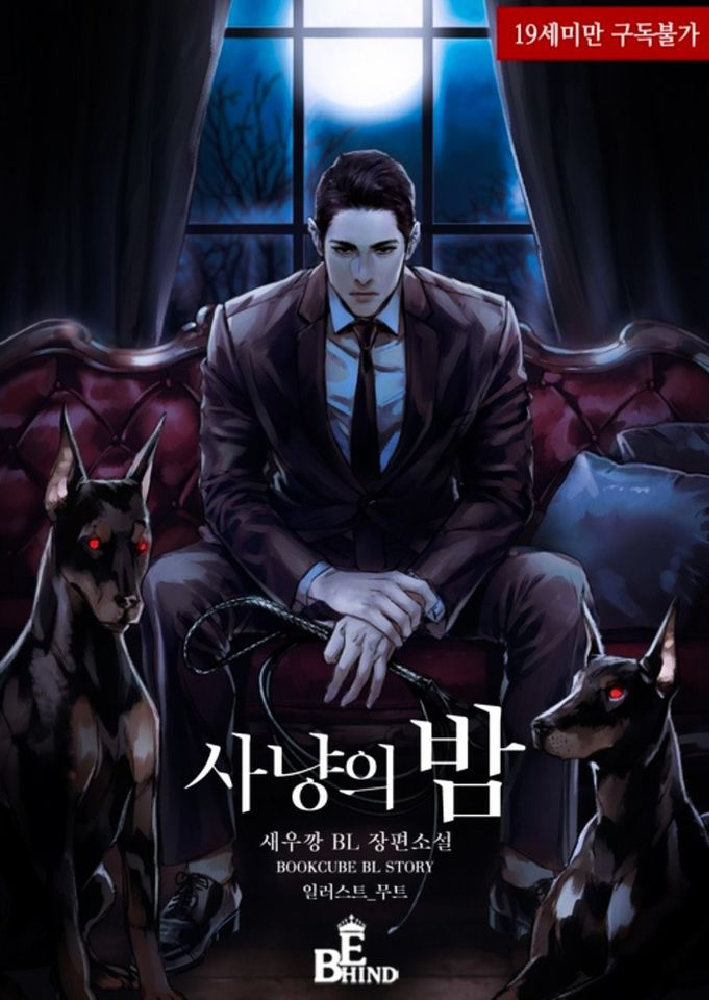

 Nombre: Hunting night Autor: Saeuk Kang /새우깡 Categoría:Omegaverse | Moderno | Mpreg | Obsesión |Chaebol | Rut | Drama. Año:2020 Volúmenes:Enedición: Por la autora. Estado:Finalizado. —¿Porquéyo? Fue una respuesta que nadie pudo darme. —Da a luz a mi hijo. —Sus órdenes fueron absolutas. —Mi cuerpo no puede tener hijos. Moriré. —Lo sabrás cuando lo intentes.Derramaré todo de mi sobre ti,hasta tener un hijo. Pero decidí no escuchar sus órdenes y me escapé de él… Con su hijo en el vientre. Comienza la larga noche de caza
Kim siempre ha vivido una vida cómoda gracias a sus padres, pero un día recibe una llamada telefónica donde le informan de un accidente que involucra a sus padres. Su padre muerto y su madre encontrandose en el hospital en estado critico. Ahora su vida perfecta se derrumba por completo. Al cabo de unos años Kim pasa horas cuidando a su madre y trabajando para pagar las cuentas medicas. Un día, uno de los profesores le recomendó una compañía llamada Global Exos, quien anunció hacer historia con la mas nueva tecnología de videojuegos en realidad virtual. Su trabajo ahora sera ser uno de los escogidos entre los 2000 participantes y demostrar su habilidad en los juegos RPG.
El sacerdote Edda, que es respetado por sus palabras, hechos honestos y nobles, lleva a cabo una ceremonia especial de bautismo en lugar de su maestro, el sumo sacerdote, quien ha caído de una enfermedad. En el antiguo monasterio, que permanece cerrado durante 12 días para la ceremonia, solo quedan por bautizar al príncipe violento, el caballero más noble del país, el duque desconocido y su íntimo amigo, San Juan, que se queda solo para ayudar. En esa primera noche, Edda es humillado por un desconocido. A la mañana siguiente conoció a los cuatro hombres, pero nadie puede siquiera adivinar quién sería capaz de algo tan horrible. ¿Quién es el culpable? Vuelve una segunda noche para Edda, que está preocupado por el miedo, la vergüenza y la culpa...